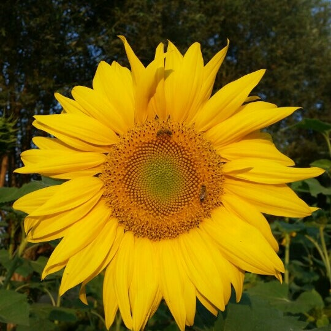

Auringonkukka
(Auringonkukka: Wikipedia CC-BY-SA) Auringonkukka eli isoauringonkukka (Helianthus annuus) on asterikasvien (Asteraceae) heimoon kuuluva yksivuotinen kasvi. Auringonkukiksi voidaan kutsua myös monia muita auringonkukkien (Helianthus) suvun kasveja.
Historia
Auringonkukka on kotoisin Pohjois-Amerikasta. Laji on levinnyt jo varhain Peruun, jossa siitä tuli auringonjumalan vertauskuva. Auringonkukan kuvia on löydetty inkatemppelien seinistä ja palvontamenoissa käytetyistä esineistä. Vanhaan maailmaan auringonkukka tuli Perusta ja Meksikosta jo 1500-luvulla ensimmäisten amerikkalaisten kasvien joukossa.
Kuvaus
Auringonkukka on yksivuotinen ruohovartinen kasvi. Varret ovat karheita ja tavallisesti haarattomia. Lehtilapa on 10–40 cm pitkä, leveänpuikea ja iso- ja terävähampainen. Alimmat lehdet ovat herttamaisia. Auringonkukka on hyönteispölytteinen. Kukinto on 5–40 cm leveä mykerö. Mykeröt ovat tavallisesti yksittäin ja alkavat lopulta nuokkua. Keltaisten laitakukkien kieli on tavallisesti yli 25 mm pitkä. Kehräkukat ovat ruskehtavia. Hedelmä on 5–15 mm pituinen myötäkarvainen pähkylä. Luonnonvarainen auringonkukka on viljelymuotoja sirompi, monihaarainen ja runsasmykeröinen.[2] Viljelymuotojen varsi voi kasvaa yli seitsemän metrin pituiseksi.
Viljely ja käyttö
Auringonkukkaa viljellään laajalti sekä koristekasvina että tärkeänä öljykasvina. Kasvaakseen auringonkukka vaatii runsaasti auringonvaloa ja maaperän, jossa vesi ei seiso. Sen kasvatusaika on pitkä: aikaisilla lajikkeillakin 105–115 päivää eli melkein neljä kuukautta. Suomessa auringonkukkaa viljellään koristekasvina ja siementen tähden; viljely on niin vähäistä, ettei öljyntuotanto kannata. Auringonkukan siemeniä syötetään linnuille, nautitaan välipalana ja käytetään ruuanlaitossa sekä salaateissa. Siemenistä puristettavaa auringonkukkaöljyä käytetään niin ikään ruuanlaitossa, mutta lisäksi siitä tehdään biodieseliä. Esimerkiksi Venäjällä paahdettuja auringonkukan siemeniä syödään kuten paahtomaissia länsimaissa. Suomessa auringonkukan siemenet luokitellaan naposteltaviin elintarvikkeisiin. Auringonkukan siemenet sisältävät runsaasti linolihappoa, B-vitamiineja (erityisesti tiamiinia, pantoteenihappoa ja folaattia) ja E-vitamiinia.
Muita auringonkukkalajeja:
- Helianthus annuus – isoauringonkukka
- Helianthus annuus Nanus-ryhmä – kääpiöauringonkukka
- Helianthus annuus Purpureus-ryhmä – puna-auringonkukka
- Helianthus atrorubens – tumma-auringonkukka
- Helianthus debilis subsp. cucumerifolius[3] tai Helianthus petiolaris – pikkuauringonkukka
- Helianthus decapetalus – kulta-auringonkukka
- Helianthus × doronicoides – heliantti
- Helianthus giganteus – jättiauringonkukka
- Helianthus × laetiflorus – preeria-auringonkukka
- Helianthus mollis – nukka-auringonkukka
- Helianthus pauciflorus – syysauringonkukka
- Helianthus salicifolius – nauha-auringonkukka
- Helianthus tuberosus – maa-artisokka
| Ravintotekijä | Pitoisuus | Yksikkö | Perusravintoaineet |
|---|---|---|
| energia, laskennallinen | 3700(884) | kJ(kcal) |
| hiilihydraatti imeytyvä | 0 | g |
| rasva | 100,0 | g |
| proteiini | 0 | g |
| alkoholi | 0 | g | Rasva |
| rasvahapot yhteensä, laskettu TAG ekvivalenteiksi | 100,0 | g |
| rasvahapot yhteensä | 95,7 | g |
| rasvahapot tyydyttyneet | 11,0 | g |
| rasvahapot yksittäistyydyttymättömät cis | 21,9 | g |
| rasvahapot monityydyttymättömät | 62,8 | g |